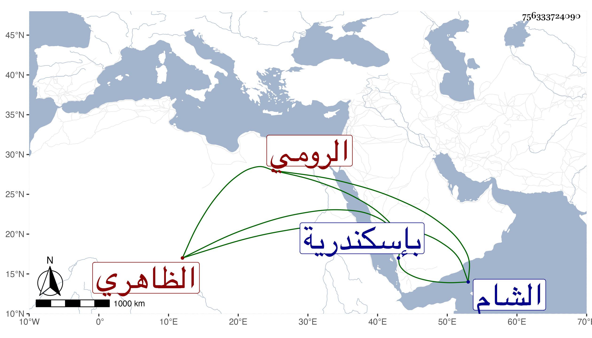

0902Sakhawi.DawLamic.ITO20230111-ara1.EIS1600.756333724090
Biography ID: 756333724090
547
فارس القطلو قجاوي الرومي الظاهري برقوق . أصله من مماليك خليل بن عرام اشتراه من بعض الخبازين بإسكندرية ممن كان يبيع الخبز عنده وآل أمره إلى أن صار من جملة مماليك الظاهر برقوق فحظي عنده ورقاه إلى إمرة عشرة ثم طبلخاناه ثم بعد قدومه من السفرة الثانية من الشام قدمه وولاه الحجوبية الكبرى عوضا عن بخاص ، وكان شجاعا حسن الرمي مائلا إلى المغاني والملاهي . قتل مع أيتمش في سنة اثنتين وقد ناهز الأربعين . ذكره العيني وغيره .
